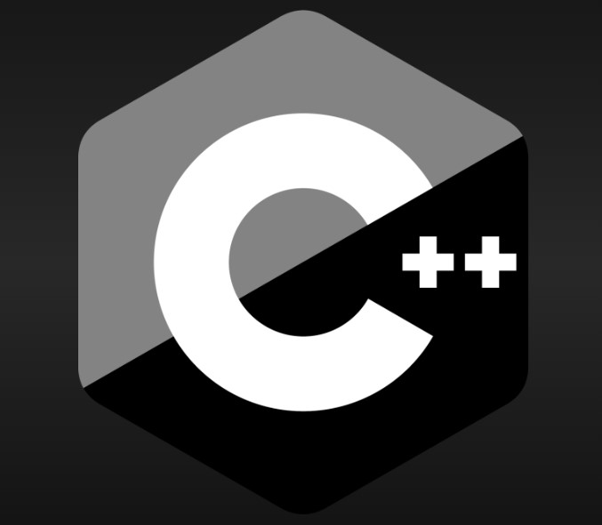

C++ is a powerful and versatile programming language renowned for its efficiency, flexibility, and robustness. Developed as an extension of the C programming language by Bjarne Stroustrup in the early 1980s, C++ retains compatibility with C while introducing new features that support object-oriented programming (OOP) paradigms. With its rich set of features and wide-ranging applications, C++ has become a cornerstone of software development across various domains. At its core, C++ embraces the principles of object-oriented programming, facilitating the creation of modular and reusable code through the use of classes, objects, inheritance, and polymorphism. Its support for data abstraction, encapsulation, and inheritance fosters code organization and maintenance, while polymorphism enhances flexibility and extensibility. C++ offers powerful abstractions such as templates, which enable generic programming and allow developers to write code that works seamlessly with different data types. The Standard Template Library (STL) further enhances productivity by providing a collection of generic data structures and algorithms. Moreover, C++ grants developers fine-grained control over system resources and memory management, allowing for optimized performance in resource-intensive applications. From system software and game development to high-performance computing and embedded systems, C++ serves as a preferred language due to its efficiency, performance, and versatility. As a result, mastering C++ opens doors to a wide array of career opportunities and empowers developers to tackle diverse programming challenges with confidence and proficiency.
Features of C++
- Encapsulation
- Template Metaprogramming
- Exception Handling
- Memory Management
- Compatibility with C
Why learn C++?
- Versatility
- High Performance
- Object-Oriented Programming (OOP)
- Compatibility with C
- Industry Adoption
- Resource Management
- Standard Template Library (STL)
- Performance Critical Applications
- Learning Foundation
- Community and Support
Advantages of C++
- High Performance
- Object-Oriented Programming
- Machine Independent
- Large Community
Disadvantages of C++
- Steep Learning Curve
- Verbose Syntax
- Error-Prone
To learn more about C++ Language, here are some resources:
C++ Language ONLINE MATERIAL